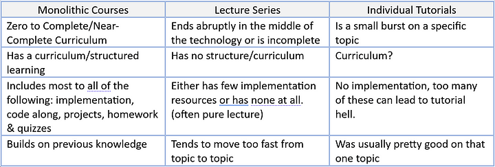
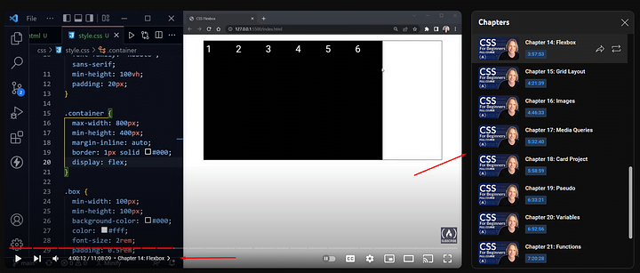
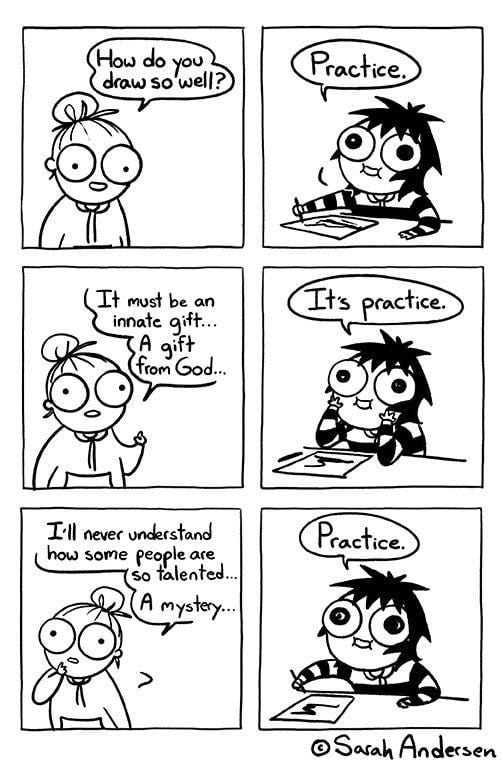

I absolutely LOVE monolithic courses. They offer unique benefits you cannot get from individual tutorials and, if the course quality is high, it helps deter tutorial hell.
What is a Monolithic Course?
Well, it is a series of lectures, usually with code along, quizzes, homework & projects. This is the ideal monolithic course. But, it gives relatively the most complete knowledge of a topic.
To be transparent, the absolute best monolithic courses typically have you pay. Courses on Udemy are an example and often cost $13-$30 for life time access. Free monolithic courses are not as good, I hate to say it, but you can find free courses on YouTube. Channels like freeCodeCamp are chock-full of monolithic courses, some better than others.
Monolithic vs Individual Tutorials
The basic idea is, monolithic courses are like college classes, without the community. It has a curriculum/structure, it gives a complete/near-complete teaching on a technology and it builds on itself as you go.
| Aspect | Monolithic Course | Individual Tutorials |
|---|---|---|
| Structure | Curriculum-based, progressive | Topic-specific, fragmented |
| Completeness | Complete/near-complete coverage | Covers specific topics |
| Build-up | Builds on itself as you go | Standalone topics |
The author will assume you know some fundamentals but not everything. They will not assume you know nothing and they will not assume you know everything. This is key. This is the sweet spot a good instructor is trying to hit and it is a balancing act they must get right.
Tutorial Hell and How to Avoid It
Tutorial hell is a very common problem for new programmers. It is when you jump from tutorial to tutorial without understanding and they never build on each other. You feel like you are learning, but in reality you are just watching someone else code and not actually learning to code.
The solution? A monolithic course breaks this cycle because of the structure and the fact that it builds on itself. You cannot just jump around. You have to follow the progression of the course.
Why They Help So Much
Monolithic courses are structured with progression in mind. Early topics are the foundation and as you go further, they layer complexity on top of previous learnings. This is far more effective than random tutorial watching.
Additionally, good monolithic courses have:
- Code-along sessions where you type along with the instructor
- Quizzes to test your understanding
- Homework assignments to reinforce learning
- Real projects to apply your knowledge
Where to Find Good Courses
Here are some great places to find quality monolithic courses:
- Udemy: Affordable ($13-$30), wide selection, lifetime access
- freeCodeCamp (YouTube): Free, high-quality content from passionate instructors
- Coursera: University-level courses, some free to audit
- Pluralsight: Professional development courses
Conclusion
Do full monolithic courses really help you become a great coder? Absolutely yes. They provide structure, progression, and build-up that casual tutorial watching simply cannot match. If you want to get serious about learning to code and avoid tutorial hell, invest in a good monolithic course. Your future self will thank you.